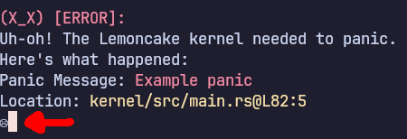

About
Lemoncake is an OS written in Rust, and was created by SniverDaBest.
It was originally called Lemonade, but because of changes in the Rust programming language, I had to restart the entire project.
The OS uses a monolitic kernel design. It tries to have things like drivers, and filesystem management done in the kernel.
It's licensed under the BSD 2-clause license, to let anyone possibly fork, and contribute. Maybe even make their own OS based off of this one!
Contact
If you need to contact me, my email is sniverdabest@proton.me, and my Discord is sniverdabest.
Help
Running the VM
If you're having trouble running Lemoncake in a VM (or don't know how to) then follow these steps.
- Install Rust
- You can do so by going to the official website's download page and following the instructions for your specific operating system.
- IMPORTANT: If you're on Linux, do NOT use your distro's package manager to install Rust. It will most likely not work!
- Clone the GitHub repository
- Run
git clone https://github.com/SniverDaBest/lemoncake && cd lemoncakein your commandline. - TIP: If you don't want to install git, you can download it from GitHub's website.
- Run the utility script
- Type in (or copy and paste) to your terminal
python3 utils.py - If you don't have Python installed, you will need to install it. Linux users should already have it installed, and Windows users can install it from the official website.
- Compile and/or Run the OS with Qemu
- To compile the OS and run it with Qemu, you can type in
cargo run. However, if you just want to compile the disk image, you can runcargo build. - TIP: The built image is copied to
target/uefi.img
Compiling for BIOS
WARNING: Using the BIOS version of Lemoncake may not work correctly. UEFI support is more important to focus on, since BIOS is legacy, and very few modern computers don't have UEFI.
Follow instructions 1-3 of the Running the VM section. Once you complete them, open the src/main.rs file with a text editor. (TIP: This is not to be confused with kernel/src/main.rs)
Then, modify line 7 from let uefi = true; to let uefi = false;
Now, complete step four of the Running the VM section. You have now ran Lemoncake as BIOS.
Optional Features
As of 10/17/25, Lemoncake has three optional features.
- serial-faces
- When the system panics or faults, a sad face will appear through the serial terminal. This is togglable, as it may not render in every single terminal, and may lead to confusion.
- 
- status-faces
- When something is logged, it is shown as one of following by default: (o_o) [INFO ]: info, (0_0) [WARN ]: warning, (X_X) [ERROR]: error, or (-_-) [TODO ]: todo. You can disable the emoticons by disabling this feature.
- clear-on-scroll
- Instead of scrolling down when there is too much text on the screen to fit, it will clear the entire TTY.
- NOTE: This feature is NOT enabled by default!
- catppuccin-colorscheme
- Enables the catppuccin color scheme. It looks pretty :)
Known bugs
- TTY won't clear on real hardware.
- For some reason, when testing on real hardware, the TTY didn't seem to clear when scrolling, or with the clear-on-scroll feature enabled.